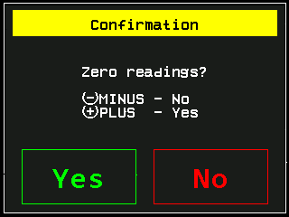
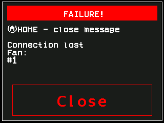

Screens, menus, context menus and windows
The things everything on the Hectare Mini is done through — the working screens, the menus, the context menu of a device, the windows that ask or tell, and the access levels.
Everything on the panel happens through the working screens, the menus, the context menu of a device and the windows that ask or tell you something. Numbers are typed on the number pad.
The working screens
“HOME” moves on from one working screen to the next, always in this order:
| Screen | Shown |
|---|---|
| Home screen | Always. |
| Seeding table | Always. |
| Statistics | Always. |
| Motors | Only if the machine has dispenser motors or tramline actuators, and only above the Operator access level. |
| Rate control | Always. One more “HOME” returns to the home screen. |
“BACK” returns to the home screen from the Seeding table, the Statistics and the Motors screen. The rate control screen is left only with “HOME”.

Menus
“MENU” opens the menu of the screen you are on — on the home screen, the main menu.

- Selected item. Black text on a blue band. “UP” and “DOWN” move the band; at the end of the list it jumps to the other end.
- Value between − and +. Shown on the selected item: change it with “PLUS” and “MINUS”, right there in the list.
- Value of an item that is not selected. The − and + appear when you select it.
- Arrow head. The item opens another menu. Press “MENU”.
- Scroll bar. The list is longer than the screen.
| What you see on the right | What it does |
|---|---|
| An arrow head | Opens another menu. Press “MENU”. |
| A value between - and + | “PLUS” and “MINUS” change it one step at a time. |
| A value between -[ and ]+ | “PLUS” and “MINUS” change it one step at a time; “MENU” opens the number pad to type it. |
| Nothing | The item performs an action. Press “MENU”. |
You can also touch an item to select it and touch it again to open it. “BACK” leaves a menu, one level up.
The context menu of a device
Every sensor on the home screen, the rate control screen and the Motors screen has its own menu. Hold “MENU” until one device is shown on a white background — this is the sensor setup mode — then select the device with “UP” and “DOWN” and press “MENU”. How to work in this mode: Take a sensor into or out of control. The items of each context menu are in Sensor settings.

Windows that ask, and windows that tell
A question window has a yellow strip with “Confirmation”. The lines under the question name the two buttons that answer it — they differ from window to window, so read them. The green “Yes” and red “No” on the screen can also be touched. “BACK”, or a touch outside the window, always cancels.

An information window has a blue strip with “Information”. It closes by itself, or with a touch or a button.
Alarm windows

- Red strip. “FAILURE!” — the window reports a fault.
- Hint. “HOME” closes the window.
- The fault. Here the connection to a sensor is lost.
- Type of the sensor. Here the fan.
- Numbers of the sensors. When several sensors of the same type have the same fault, all their numbers are listed.
- “Close”. Touch it to close the window.
While the window is shown, the panel sounds the alarm signal and lights its alarm indicator. “HOME” or a touch of “Close” closes the window; “HOME” held closes it and returns to the home screen. The other buttons do nothing here. All alarms and what to do: How alarms work.
Access levels
| Level | What it opens |
|---|---|
| “Operator” | What you need for work. Active after every power-on. The only level at which alarm windows are shown. |
| “Agronomist” | Hidden items and parameters of the machine and the sensors. Needs a code from the data sheet of your panel. |
| “Service” | The profile and the rest of the commissioning work — for the service only. The configuration of seed and pressure sensors needs only the “Agronomist” level. |
The level is chosen in “Settings” → “User”. How: Enable the Agronomist level. In this manual, a parameter that needs a higher level says so.
Something your machine does that this page does not answer? Write to support@agriwelt.com — an engineer answers.